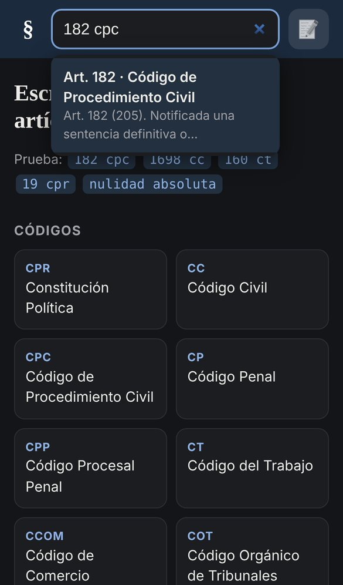
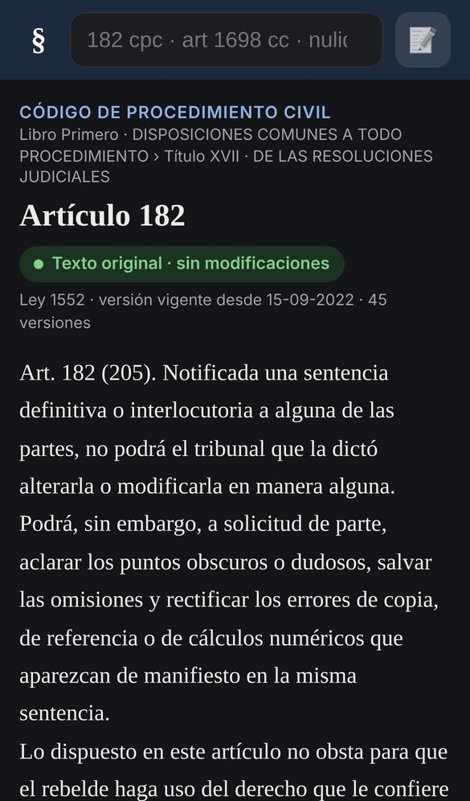

Aplicación webPublicada
Al Artículo: buscador de leyes chilenas
Encontrar un artículo de ley en Google o LeyChile toma varios pasos. Al Artículo prueba algo más directo: escribir "182 cpc", como en el buscador del diccionario de la RAE, y llegar al texto.
15códigos descargados
+30leyes precargadas
Cada nocheactualización automática
$0costo de hosting
El problema
Quien trabaja con leyes consulta los mismos artículos una y otra vez, y cada búsqueda pasa por varias páginas antes de llegar al texto. Además, las anotaciones personales suelen quedar en papel o en otro documento.
Lo que hace
- Buscador con sugerencias que entiende formas distintas de escribir: "182 cpc", "art. 1698 del código civil", "152 bis a ct" o palabras como "nulidad absoluta".
- Muestra si cada artículo es texto original o fue modificado, con la última ley que lo cambió y su historial.
- Subrayado y notas tipo post-it en 5 colores, guardadas en el propio teléfono, con aviso si un artículo anotado cambió.
- Un cronómetro de prueba para medir si realmente ahorra tiempo frente a otras herramientas.
Cómo está construido
- Sitio estático en HTML, CSS y JavaScript, publicado gratis en GitHub Pages y usable como app en el teléfono.
- Un script en Python descarga los textos desde el servicio público de la Biblioteca del Congreso Nacional.
- Una tarea de GitHub Actions lo ejecuta cada noche y guarda cambios solo si algún texto se modificó.

